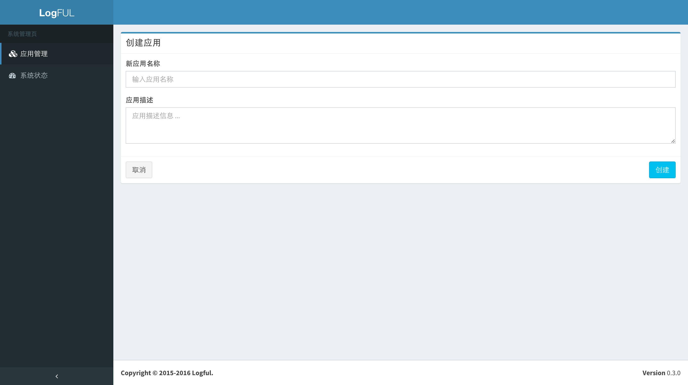
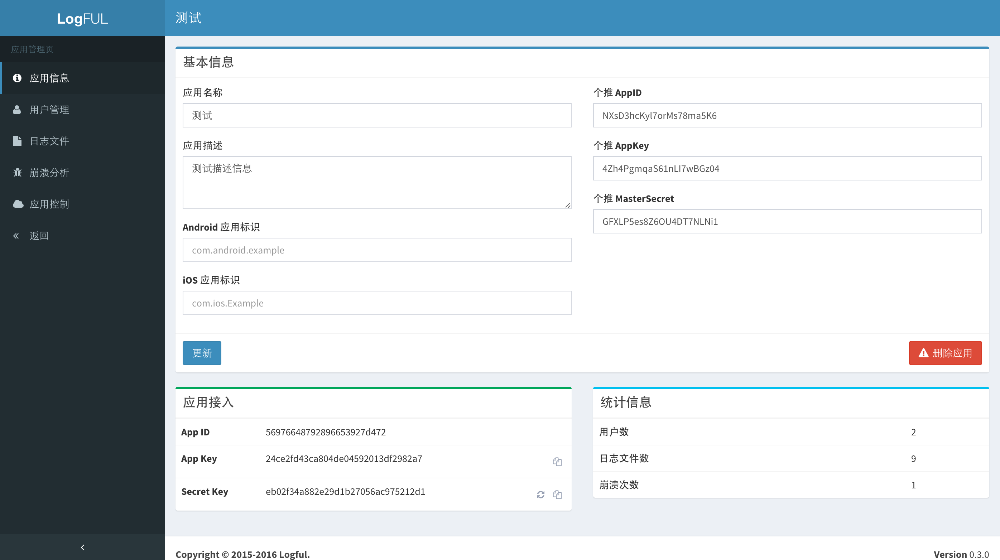
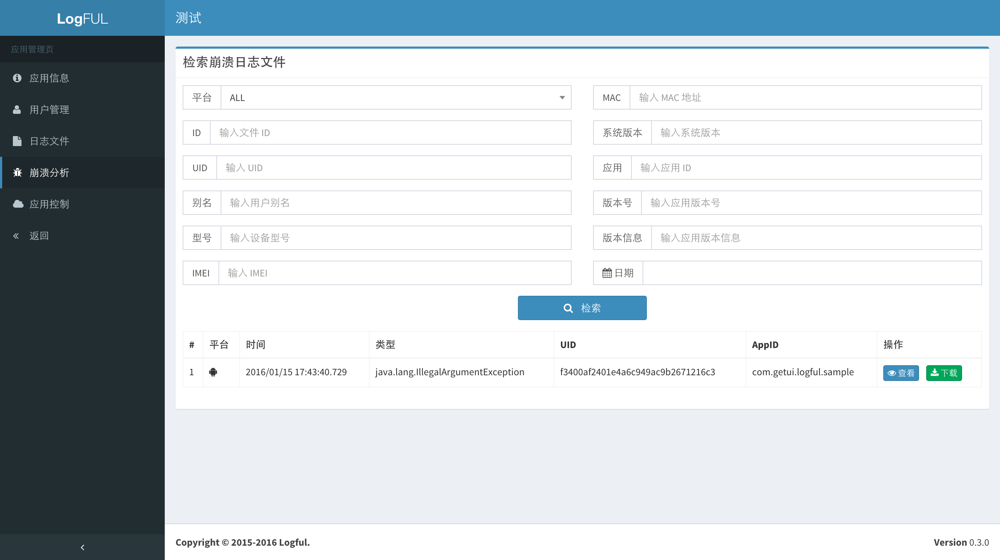
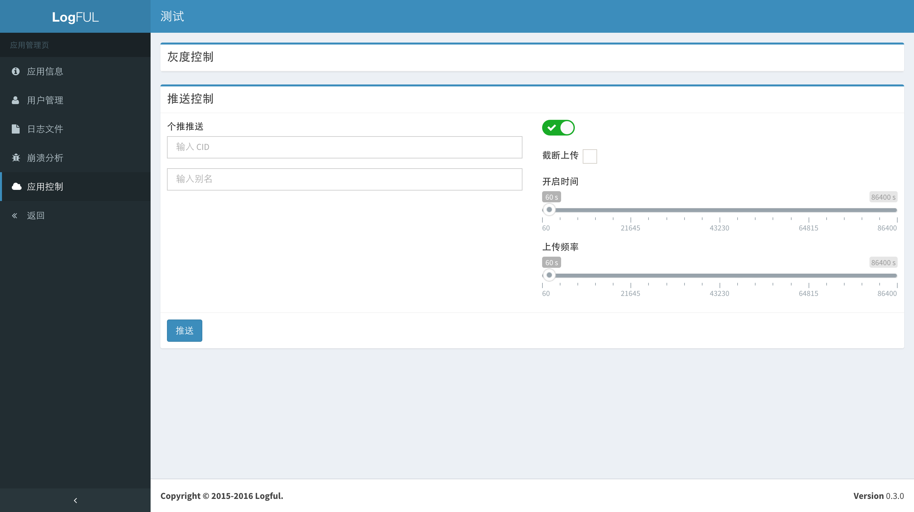

Start Logging¶
完成了 Logful 日志服务部署，接下来就可以在客户端进行日志记录了。在本节中，您可以看到如何在 Android 和 iOS 客户端中正确集成 Logful SDK，并进行日志记录工作。同时在本节最后，可以看到日志如何在服务端被查询、检索和使用。
Android Studio 集成¶
首先在 build.gradle 中添加 logful 的库依赖：
dependencies {
...
compile('com.getui:logful:0.3.0')
...
}
在 Application 入口文件 onCreate 方法初始化 SDK：
import android.app.Application;
import com.getui.logful.LoggerConfigurator;
import com.getui.logful.LoggerFactory;
import com.getui.logful.annotation.LogProperties;
public class MainApplication extends Application {
@Override
public void onCreate() {
super.onCreate();
LoggerConfigurator.Builder builder = LoggerConfigurator.newBuilder();
// 设置 Api 地址
LoggerFactory.setApiUrl("YOUR_API_BASE_URL");
// 设置 AppKey
LoggerFactory.setAppKey("YOUR_APP_KEY");
// 设置 AppSecret
LoggerFactory.setAppSecret("YOUR_APP_SECRET");
// 初始化 SDK
LoggerFactory.init(this, builder.build());
}
}
使用 logger 打印日志：
// 使用默认 logger 打印 debug 级别日志
LoggerFactory.debug("tag", "some|debug|message");
// 使用自定义的 logger 打印 debug 级别日志
Logger logger = LoggerFactory.logger("sample");
logger.debug("tag", "some|debug|message");
打印带有截图的日志：
// 第三个参数为 true 表示需要同时进行截图保存
LoggerFactory.verbose("tag", "some|key|checkpoint", true);
开启 debug 调试模式
LoggerFactory.setDebug(true);
iOS Xcode 集成¶
CocoaPods 集成¶
如果还没有安装 CocoaPods，请在终端执行如下指令进行安装：
$ sudo gem install cocoapods
$ pod setup
进入工程根目录，创建或者编辑 Podfile 文件并添加 Logful 依赖：
$ cd /path/to/YourProject
$ touch Podfile
$ vim Podfile
platform :ios
pod 'Logful', '~> 0.3.0'
安装依赖：
$ pod install
打开工程根目录下的 .xcworkspace 文件：
$ open YourProject.xcworkspace
直接添加工程集成¶
把 Logful iOS SDK 添加为 submodule：
$ cd /path/to/YourProject
$ git submodule add git@github.com:logful/logful-ios.git
$ git submodule update --init --recursive
添加 libsqlite3、libz、MobileCoreServices.framework、SystemConfiguration.framework、Openssl.framework。
使用 Logful iOS SDK¶
初始化 SDK：
#import "AppDelegate.h"
#import <Logful/Logful.h>
@interface AppDelegate ()
@end
@implementation AppDelegate
- (BOOL)application:(UIApplication *)application
didFinishLaunchingWithOptions:(NSDictionary *)launchOptions {
GTLoggerConfigurator *config = [GTLoggerConfigurator configWithBlock:^(ConfiguratorBuilder *builder) {
builder.defaultLoggerName = @"sample";
builder.caughtException = NO;
}];
// 设置 Api 地址
[GTLoggerFactory setApiUrl:@"YOUR_API_BASE_URL"];
// 设置 AppKey
[GTLoggerFactory setAppKey:@"YOUR_APP_KEY"];
// 设置 AppSecret
[GTLoggerFactory setAppSecret:@"YOUR_APP_SECRET"];
// 初始化 SDK
[GTLoggerFactory initWithConfig:config];
return YES;
}
创建 logger：
GTLogger *logger = [GTLoggerFactory logger:@"sample"];
打印日志：
[logger verbose:@"TAG" msg:@"verbose message"];
打印带有当前屏幕截图的日志：
[logger verbose:@"TAG" msg:@"verbose message" capture:YES];
使用默认的 logger 打印日志：
GLOG_DEBUG(@"TAG", @"debug message");
GLOG_DEBUG_CAPTURE(@"TAG", @"debug message");
开启 debug 调试模式
[GTLoggerFactory setDebugMode:YES];
应用管理和操作¶
Logful Web 基本操作¶
-
创建应用 -
根据创建的应用信息进行接入 -
查询用户
-
获取日志文件列表
-
查看日志文件
-
获取崩溃日志文件列表 -
推送控制日志系统上传
Graylog 日志检索¶
-
根据包名为 app_id 查询日志
-
检索错误 ID 为 80001 的日志记录
-
根据特定字段的数值生成专有的实时数据图表